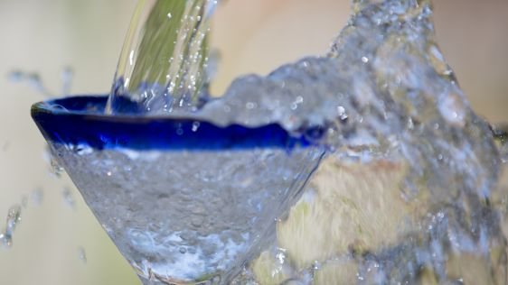

Icecubes

The perfect recipe for freezing water.
Ingridients
- 1 cup water
- 1 teaspoon water
Steps
- Place glass under tap.
- Turn tap on.
- Fill glass with water almost to top.
- Turn tap off.
- Top up glass with additional teaspoons of water until full.
- Use paper towel to mop up any spillage.
- Enjoy!
Credits: here
Return Home